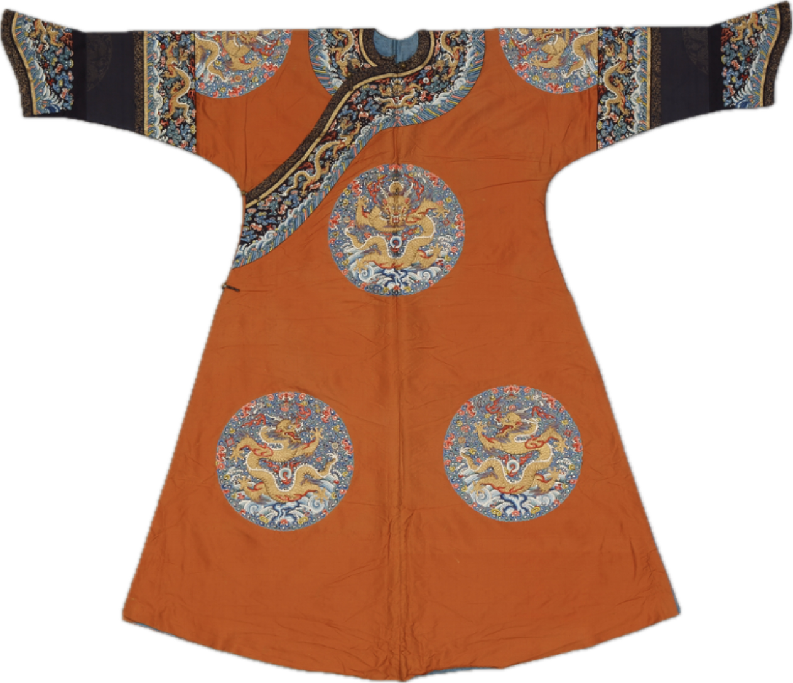

数据资料与介绍
展览单元
第一单元「天地日月」
重点呈现宫廷中制作最精良庄严的一类服饰——祭服。在古代君权神授的观念下，承天命，治万民，君主治国也是对天命负责，明君对于祭祀都诚敬惟谨，祭服也是宫廷中制作最精良庄严的服饰。因此染色、织绣标准也非常严格，不许有一点疏忽和瑕疵。 自康熙、雍正时期，清宫中衣色礼制进一步确定。雍正朝《大清会典》更明确了四郊：天、地、日、月各坛祭祀的服色。而石青、明黄、宝蓝、大红、月白也是清代最重要的衣色和纹彩。
月白色云龙妆花纱袷朝袍：此朝袍为皇帝夕月祭祀所用礼服。其织造精工，色调和谐，体现出清雍正时期江宁织造妆花纱的工艺与装饰水平。
蓝色缎绣彩云金龙夹朝袍：蓝色朝袍为清代皇帝礼服之一，穿用于冬至圜丘坛祭天、祈谷、雩祀等重大祭祀场合。在蓝色缎地上，绣制彩云金龙、海水江崖及十二章等纹样，构图繁复庄重，晕色自然和谐，绣工细腻入微，凸现雍容华贵金碧辉煌的皇家气派，是清乾隆时期苏州刺绣的典型佳作。

石青二则团龙暗花缎夹朝袍：清初对皇帝袍服曾有明确规定，大典或祭庙所着礼服用黄色、秋香色、蓝色。此蓝色朝袍虽然没有绣纹，但织工讲究，质地细密光滑，团花纹紧密饱满，应是康熙皇帝祭祀时所穿。
第二单元「正大光明」
展出帝后专用的黄色服饰。正大，而天地之情可见．履帝位而无疚，光明也。此四字出自易经，高悬于皇帝正寝乾清宫的帝座之上，与之相映的是清代帝后礼服用的明黄色 在中华五色系统中，五行、五方、五色形成对应体系，黄色被定为中央之色，成为至尊之彩。帝王所用的黄色明亮温暖，是高可见度的色彩，显赫辉煌。隋唐时期，黄色已成皇帝常服衣色，而做为帝后专用服色写入制度始于明代。自东北后金建国时期，努尔哈赤就沿袭明制，将黄色作为汗王的专有之色。于是，做为帝王隆兴的背景色，黄也被史官粉饰在历史传说中。
明黄色缂丝金龙纹女夹朝袍：此朝袍缂工以平缂为主，有多处动笔晕染，但仍不失为一件缂丝精品，为清嘉庆皇后冬季所穿。朝袍原有布条，上书：“西暖殿”。

明黄色缎绣彩云八宝金龙纹女夹龙袍：这是一件清中期女八团吉服袍的典型。此袍与乾隆期《皇朝礼品图》中所载基本符合，堪称标准。这件明黄色缂丝八团有水龙袍应为孝慎皇后佟佳氏穿用的吉衣服袍。 它打破了以金线绣制龙纹的传统装饰方法，大胆采用黄色丝线对龙纹加以表现，同时，通过大红色云蝠的反差衬托，使恬淡的龙纹更具庄重热烈的装饰效果，这种独特的手法为清代所少见。
杏黄色纱锈蓝龙纹女夹龙袍：龙袍在杏黄色实地纱上绣蓝色龙纹。衣色橘黄偏红，实为金黄色，称杏黄是抬高之意。此袍五彩云纹别具特色，俗称骨朵云，是乾隆中后期流行起来的云纹，芝形云头多以红、香、藕荷三色镶饰，红粉色不张扬，藕荷色趋暗淡，只香黄色在金黄地上映亮。
第三单元「青深雅健」
呈现清代最具代表性的蓝色服饰。明代所谓青色大约为深蓝色，而清代所谓「青」调更趋深邃。《大清会典》不断完善后，石青被定为官服礼制中最主要的色彩。而天青、红青、元青等也屡见宫中穿衣档、奏销档和贡单中。可以说，清代最有代表的衣色正是生生不息的青蓝，其凝重、坚毅、深沉、典正而有力，正可改用古人对太史公文章的赞美来形容：青深雅健。
石青色缎绣四团金龙文夹衮服：织物色泽沉稳，搭配金龙纹样，富丽而庄重。
石青色云龙妆花缎袷朝袍：该服在石青缎上绣四团彩云海水金龙纹。特别是前胸团纹内平金绣＂福入东海＂篆字纹样，后心及两肩团纹内则平金绣＂寿比南山＂字样。石青锻青中隐红，团纹以蓝、绿色为架构，五彩齐备。此褂应是康𤋮帝在万寿盛典时外穿礼服褂。 此朝袍为皇帝礼服。其织工精细，石青地色沉稳庄重，更衬托出金彩纹饰的明艳华美，为清雍正朝江宁织造局妆花缎之精品。
石青团龙纹暗花实地纱夹常服褂：褂石青色实地沙，暗花团龙纹。此为清中期常服，此褂色青中有红，与青中偏蓝的天青染色所不同。
第四单元「四季瑞染」
展示各类宫廷服饰的季节与节庆特色。清代服饰色彩丰富，按照季节与场合选择不同的颜色和纹样。 芳菲映窗时，花团锦簇不仅盛开在宫苑的琉璃池内，也会藉着丝彩绽放在后妃和皇子皇女的彩服花衣上。年节喜庆，是穿吉服的时日，又称花衣期。在礼制等级之中，大家也有了争奇斗艳的机会。 黄色系，除了尊贵的明黄、杏黄、金黄，还有香黄、鹅黄、姜黄、米色。 青色系，除了官服常用的石青、天青、红青外，还有雪青、豆青和虾青。 红色系，除了权贵标示的大红，还有木红、绛色和粉红等。 蓝色系，除了官服常见的宝蓝，还有月白、湖色和近代的品蓝、品月。 紫色系，除了清中期流行的藕荷、酱色和玫瑰紫，还有晚期的茄紫、雪灰和青莲。 绿色除了宫中常见的官绿、砂绿，还有豆绿、葵绿、茶绿、果绿以及晚清洋色品绿等。
大红色羽缎单氅衣：红色在清代是权贵之色，红帽顶、红织金里等都是为统治者的礼吉服设计的色彩标识。 氅衣在清代晚期宫廷女性生活中是最重要的服装，反应了当时宫廷后妃将便服吉服化的穿用倾向，氅衣的色彩和装饰也日趋华美。羽缎是当时权贵中流行的西洋进口织物，为一种精细的毛织物，其大红染色也是西洋流行的猩红色。
绿色纱绣八团金龙纹女单龙袍：女袍在绿色纱地上绣八团彩云金龙海水纹。此袍绿色是亁隆朝宫中较编爱的一种，纱色轻浅，温润如玉。
杏黄色纱绣八团彩云蝠金龙纹女单龙袍：女袍在杏黄色纱地上绣八团彩云金龙海水纹。杏黄色名在清代宫廷典制中是属于皇太子及太子妃的服色。然而即使在《皇朝礼器图》册中杏黄与金黄也没有很明确的色差。而且清代中期以后秘密建储成熟，皇帝在位时也无太子。故杏黄色作为低于明黄色的尊色，常被用来做笼络恩赏用。这件杏黄龙袍色相其实较符合清代服制中的金黄色。

雪灰色牡丹桃纹暗花绸单衬衣：衬衣用雪灰色暗花绸制成。绸上织暗花折枝牡丹、寿桃纹，寓意富贵纤仙寿。衬衣以蓝色波浪纹＂栏杆＂镶饰衣缘，金线滚边，并镶青色蝠寿纹蕾丝花条。 此衬衣是宫中很生活化的装饰配色。雪灰色是清末流行衣色，类似藕荷色，但比藕荷色要多灰度。降低彩调，更显安静。此衬衣所镶香水波纹＂栏杆＂和蕾丝花条都洋味十足，与当时西方流行的品味也是大致同步的。
品月色缎平金银绣水仙团寿字纹单氅衣:宫廷常服。便服上花样一般要与时令相配，水仙是秋天萌芽，初春开花，此件氅衣以即初春时穿用。其领、袖、襟、下摆镶饰织金万字曲水、元青地金银绣水仙团寿衣边及冰梅纹花条。雍容华贵中平添了几分礼仪的庄重气息。 品月色是清晚期的流行衣色之一。比传统的月白色更为亮丽，这种时新洋色再以光泽度极好的缎面呈现，丽彩照人。宫中设计以盘金银的手法绣大花纹，进一步彰显穿着者的富贵身份。看晚清宫廷照片我们可以知道这样的纹彩和金万寿纹装饰，应是宫廷中地位最高的慈禧皇太后穿用。而后妃们衣饰自然要逊让几分。
第五单元「锦绣云天」
聚焦清宫服饰的材质与工艺细节。衣裳有色，章纹有彩。在织物上呈现多彩的图案，通常有染织、刺绣、印染和笔绘四种工艺，清宫彩服上都有应用。而传统服装以多彩的锦、绣、缂工艺最为贵重。清代，多重组织的锦在服装上高贵地位被妆花织物和缂丝工艺取代，刺绣也是宫廷服饰纹彩最主要的工艺。 清代宫廷用锦以宋式锦为风雅，以洋锦为时尚，以花锦为绮丽，而以金锦为荣华。锦装遍布宫室、戏台、佛堂、书斋，荟萃于收藏珍玩的库房。清代锦承袭明锦，在康、雍、乾三朝皇帝督促官营织造用心的经营下，创新颇多，渐渐形成了清代织锦的独特风格和新的时代面貌。
红色天华锦开氅：开氅用红色龟背如意纹天华锦制成。此锦是较名贵的。仿宋锦，有人认为是明末织物，但从总体风格看，可能为清初戏衣。此锦精彩灿然，而大红色在明代为高官服色。

白色彩云金龙纹妆花缎箭衣：通身织金龙十条，龙间散布流云，下摆为海水江崖纹，此衣面料选用白色妆花缎，因为江宁制造局织办。 清宫昆腔杂戏《三气》中周瑜扮相就长成曾身穿白色金龙箭衣。京剧《群英会》中的周瑜、《八大锤》中的陆文龙也都曾身穿白色金龙箭衣。

青色折枝花蝶纹妆花缎女帔：女帔以八团大折枝牡丹、梅花为骨架。胸背的折枝牡丹更有湖石相称。小折枝石榴，香橼、桃花、菊花、石竹花、秋海棠花等花卉及蝴蝶散布期间，生动写实，生机盎然。 此帔衣料为康熙年间江宁制造局之贡品，纹样丰富多姿，布局舒朗生动，设色艳丽和谐，极具匠心，堪称妆花织物之珍品。深色女帔为系中老旦专用，如《宇宙锋》之赵艳容、《贺后骂殿》之贺后等。
线稿提取与重绘
点击图片切换展示图